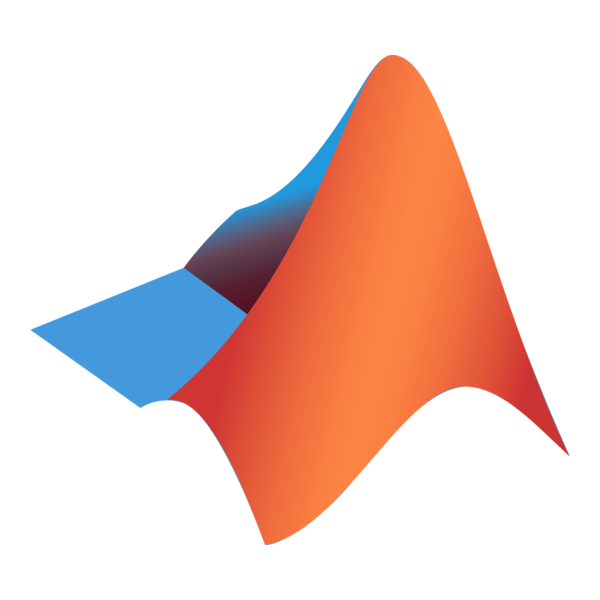
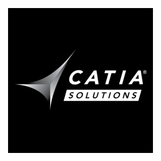
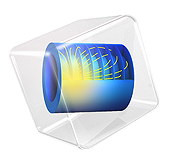
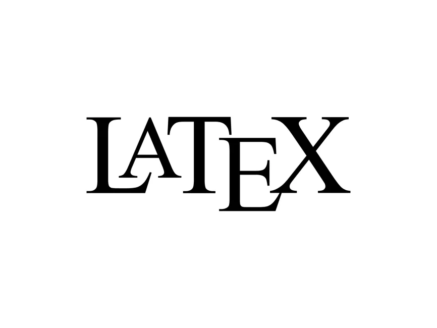
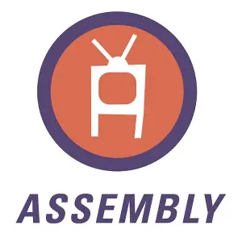
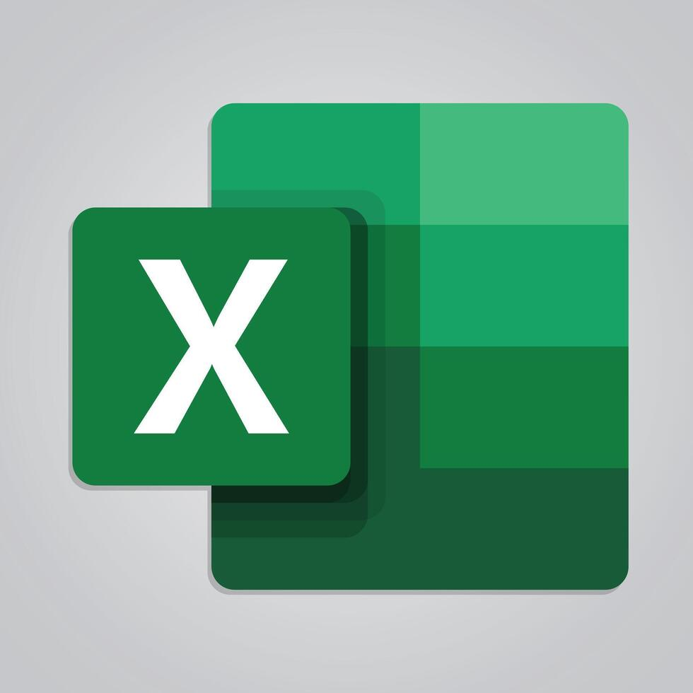
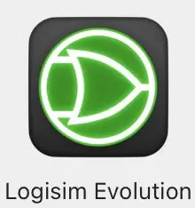
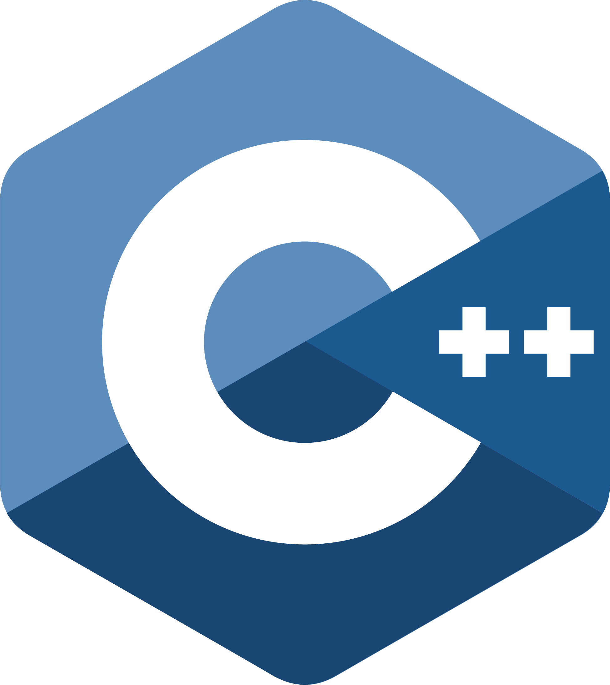
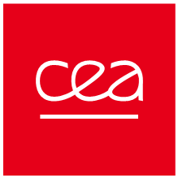
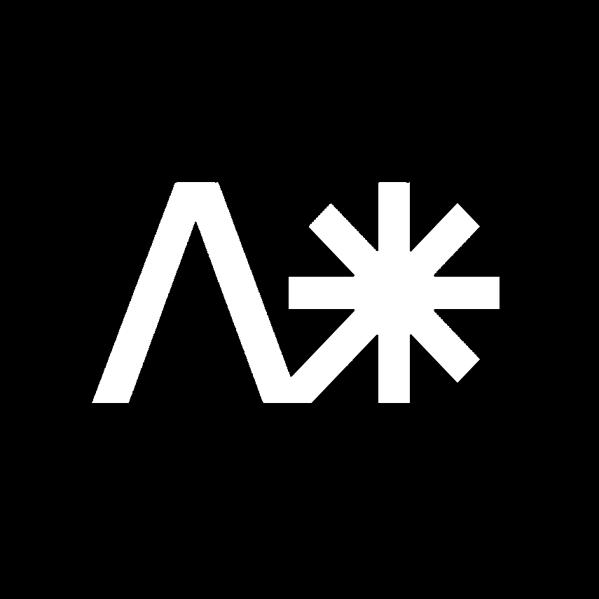

Compétences
Python

Matlab

Catia

COMSOL Multiphysics®

LateX

Assembly

Excel

Simulink

Je suis étudiant en génie mécanique à l’École des Mines de Nancy, après un parcours en microtechnique à l’EPFL (Lausanne).
Au cours de mes études à l’EPFL, j’ai eu l’opportunité de participer à plusieurs projets de conception et de programmation. Ces expériences ont confirmé ma passion pour l’innovation, la précision et la transformation d’idées en projets concrets. Vous pouvez découvrir certains de mes rapports dans la section Projets.
En dehors de l’ingénierie, je pratique le basket et le saxophone depuis mon plus jeune âge. Ces activités m’ont permis d'acquérir des valeurs que je considère essentielles pour un ingénieur : l’esprit d’équipe, la discipline et la persévérance.









Développement d’une méthodologie d’analyse visant à réduire les risques de retassures au sein d’un lingot de fonderie par simulation numérique.
En tant que responsable prévention et durabilité au Festival Sysmic, j’étais chargé de mettre en place des pratiques éco-responsables et des mesures de sécurité afin de garantir à la fois la durabilité du festival et le bien-être des participants.

En tant que responsable du pôle Innovations & Concepts au Festival Artiphys, j’étais chargé d’imaginer et de développer des idées créatives afin d’améliorer l’expérience des festivaliers et de renforcer l’identité artistique et technique de l’événement.